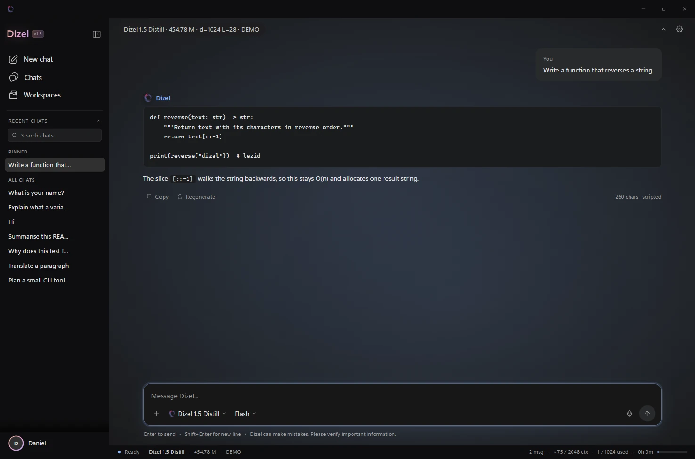

A small model that stays yours.
Dizel 1.6 Flash is a 435.3M-parameter sparse model with 293.7M active per token. It is training in public on one T4. The published v1.5 app runs locally today.
Availability
Two models.
One is ready.
The app runs v1.5 today. The 1.6 preview has no published weights and no downstream benchmarks; its training log is the public evidence. We do not blur those two states.
| Model | Status | Parameters | Runs on | Start |
|---|---|---|---|---|
| Dizel 1.5Dense · distillation | Published | 454.78Mall active | Desktop app · TUI · GGUF | Install v1.5 → |
| Dizel 1.6 FlashSparse MoE · preview | Training | 435.3M293.7M active | Weights pending | Training log → |
Documentation
Start here.
Dizel is a model and two clients. Pick the surface that matches how you work; the docs get you from a checkout to a running app.
Browse all documentation →Evidence
The model’s home.
An Electron shell over a local Python engine. It runs v1.5 today; the preview moves in when its gates clear. Prompts stay on the machine.

The sparse bet
Store more capacity. Fire less of it.
Four experts hold the knowledge. Two fire for every token. The trade is memory for compute — and measuring that trade is what the preview gates are for.
- Total parameters435.3M
- Active per token293.7M
- Experts4 · top-2
- Context2,048 tokens
- Tokenizer151,936 rows
- LicenseMIT
Interactive
Route a token.
Pick a fragment. The dropless router sends it to two of the four experts and keeps the other two asleep.
Limitations
What this is not.
A preview page should state its boundaries before asking for trust. These are the four that matter most.
- Not a vision model.No image encoder, image tokens, or multimodal projection.
- Not a 1.6 release.The preview has no published weights; v1.5 is the model you can run.
- Not publicly benchmarked.Only held-out BPB and validation loss are published; downstream results are not.
- Not a long-context model.2,048 tokens, and the app does not extend that window.